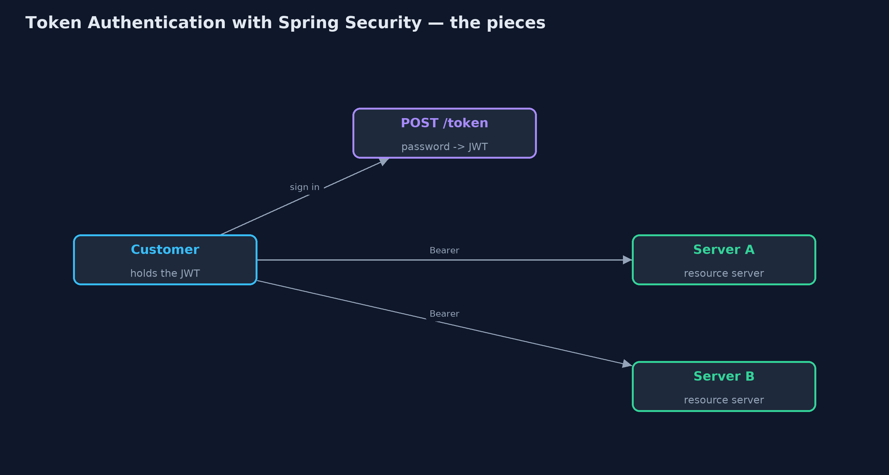
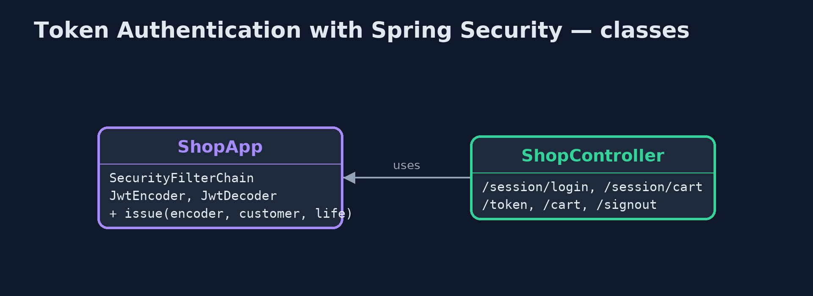
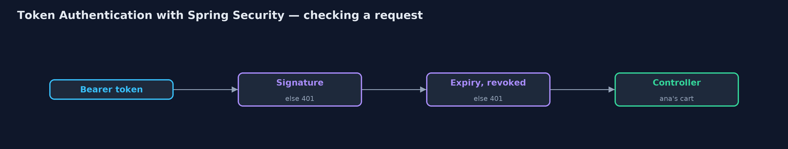
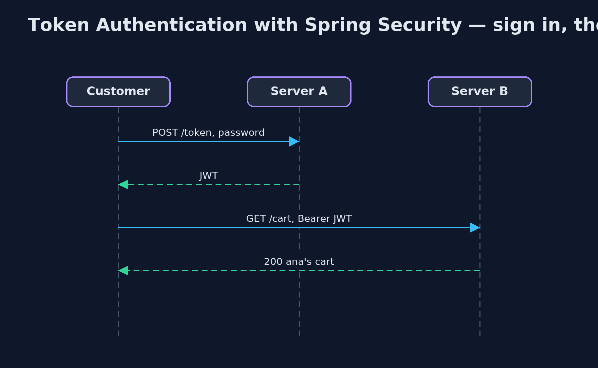

Token Authentication with Spring Security Pattern
src/main/java/com/jk/explore/tokenspring/
├── ShopApp.java One instance of the shop's web server, secured by Spring Security
├── ShopController.java The shop's endpoints: the old session-based ones, the sign-in that issues a token, and the cart
└── SpringTokenAuthDemo.java The five acts: two real instances of the shop's Spring Boot server, called over HTTPIssue a signed JSON Web Token when a customer signs in, and let Spring Security's resource-server support check it on every instance of the shop: signature, expiry and a revoked list, with no session store.
This is the framework version of the Token Authentication pattern. The plain Java version, a separate project in this category, builds and checks tokens by hand with HMAC-SHA256. Here Spring Security does it, inside two real Spring Boot instances of the shop's web server, called over HTTP.
Signing in with a password at /token returns a JSON Web Token signed with the shop's secret, using Spring Security's JwtEncoder. Every other endpoint expects that token as a Bearer header, and Spring Security's resource-server support, backed by the Nimbus library, checks the signature and expiry before any shop code runs. Both instances hold the same secret, so either accepts a token issued by the other.
The idea in everyday terms
Think of a festival wristband. The ticket is checked once at the gate, and you are given a band with a hologram and a date. Any steward at any stage can check the band without phoning the gate; a fake band has the wrong hologram, and yesterday's band has the wrong date.
The scenario
The online store's website runs on two servers behind a load balancer. With sessions kept in each server's memory, a customer who signed in on one server was asked to sign in again whenever a request reached the other.
Run
Nothing to install beyond a Java 21 JDK: the demo starts two, and at the end three, Spring Boot instances inside one program, on local ports, and calls them over HTTP.
./gradlew runThe demo tells the story in 5 acts, each printing exact numbers that the tests check:
| Act | What it shows |
|---|---|
| 1. Sessions on one server | ana signs in on server A with a session; A shows ana's cart, but B answers 401 please sign in. |
| 2. A token from Spring Security | POST /token with ana's password returns a JWT; server A and server B both answer 200 ana's cart. |
| 3. Forged and expired | Payload changed to ben: 401 Invalid signature. A token that expired 2 minutes ago: 401 Jwt expired. |
| 4. Signing out early | ana signs out on A, which revokes the token: A answers 401 revoked, B still answers 200. |
| 5. The bill | Anyone can read the payload; and a third instance holding the stolen secret signs a token for ben that server A accepts. |
Test
./gradlew test1 tests in DemoRunsTest. Every result the demo prints is asserted, with real Spring Boot instances on local ports called over HTTP.
What the simulation got right, and what it left out
The plain Java version got the idea right: a signed token naming the customer and an expiry, checked by any server with the key; tampering and expiry refused; early sign-out needing a revoked list every server shares; a readable payload and a key that must be guarded. What it left out is how a framework does it for you. Spring Security issues standard JWTs, rejects bad ones before your code runs with a clear reason, and lets you add your own check, here the revoked list, as one validator. It also exposed a real default: Spring allows 60 seconds of clock difference on expiry, which this demo sets to zero.
Technologies and versions
| Technology | Version | Used for |
|---|---|---|
| Java | 21 | the code (toolchain set in build.gradle) |
| Gradle | 9.2.1 (wrapper) | build and run, nothing to install |
| JUnit | 5.10.2 | the tests |
| Spring Boot | 4.1.1 | the web server instances |
| Spring Security | 7 (with Boot 4.1.1) | HTTP Basic sign-in, Bearer token checks, JwtEncoder |
| Nimbus JOSE + JWT | with Spring Security | signing and checking the tokens |
| videokit | repository tool | the narrated video and animation: Piper en_US-amy-medium, speed 0.8, longer pauses (the approved amy-slow voice) |
Learning Material
| Document | What it is for |
|---|---|
| Dependencies | what the framework and infrastructure are, and why they are here |
| Problem statement | the situation and what the project must show |
| Prerequisites | what you need to know first |
| Token Authentication with Spring Security, explained | the acts in prose |
| Session guide | a one-hour lesson with exercises |
| Animated walkthrough | the acts step by step, narrated |
| Spec | what this project must be true of |
The pattern in one picture
Sign in once; every instance checks the token.

Where each piece sits
Configuration, not hand-written checks.

How the data moves
Before any shop code runs.

Who calls whom, in order
No shared session.

Video
video/token-authentication-with-spring-security-pattern-explained.mp4 (with .m4a audio and .srt subtitles) is built by video/build_video.sh. Rendered media is not committed.
What it costs
- Hard to take back. A signed-out token still worked on the instance whose revoked list did not have it.
- Readable by anyone. The payload, with sub and exp, is only encoded; never put secrets in it.
- The key is everything. A third instance holding the stolen secret signed a token for ben, and the shop accepted it.
When this is too much
A single server rendering its own pages is well served by an ordinary session. Tokens pay off with several instances or services, or with mobile apps and other programs calling an API.
Where you have already met this
oauth2ResourceServer().jwt()in Spring Security configurations.- OAuth 2.0 access tokens from Keycloak, Auth0 or Okta.
Authorization: Bearer eyJ...headers in browser developer tools.
Where this sits
This project is in security-design-patterns. It is the framework version of the plain Java Token Authentication project in the same category, which is left unchanged.